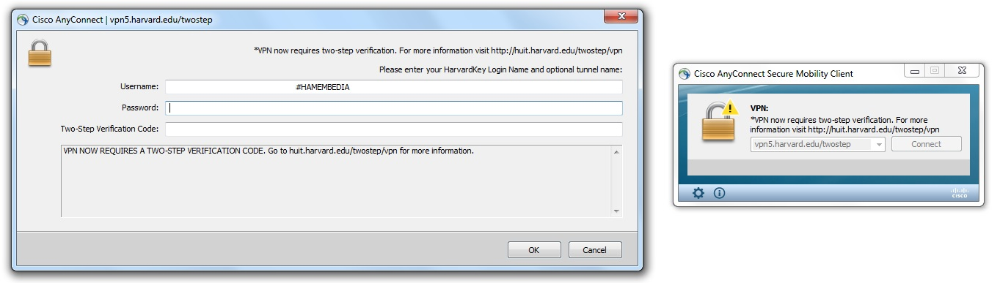
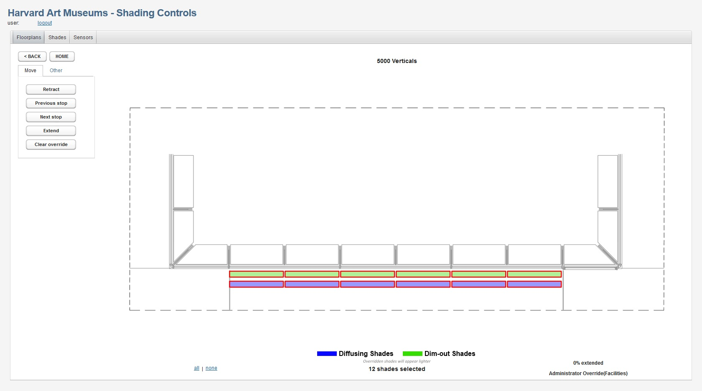

Documentation on the Lightbox Gallery for collaborators and operators
Controlling the shades requires access to the HAMEMBEDIA VPN tunnel.
To connect to the tunnel, open Ciscio AnyConnect and click "Connect." Enter your Harvard email address followed by "#HAMEMBEDIA" in the username blank, and your HarvardKey password in the password blank. Acquire a two-step verification key and enter it into the third blank, and then click "Okay". You will have to accept the brief terms statement before proceeding.
You will then have to login to the shade control GUI using a browser.
Once there, under "Floorplans", click "Level 5". The Lightbox Gallery is Room 5000. Then select "5000 Verticals". From here you can select "all" or "none", or click shades individually, to select which shades you wish to adjust. "Retract" and "Extend" control the positioning of the shades.
Note that the projectors use the central four pairs of shades.